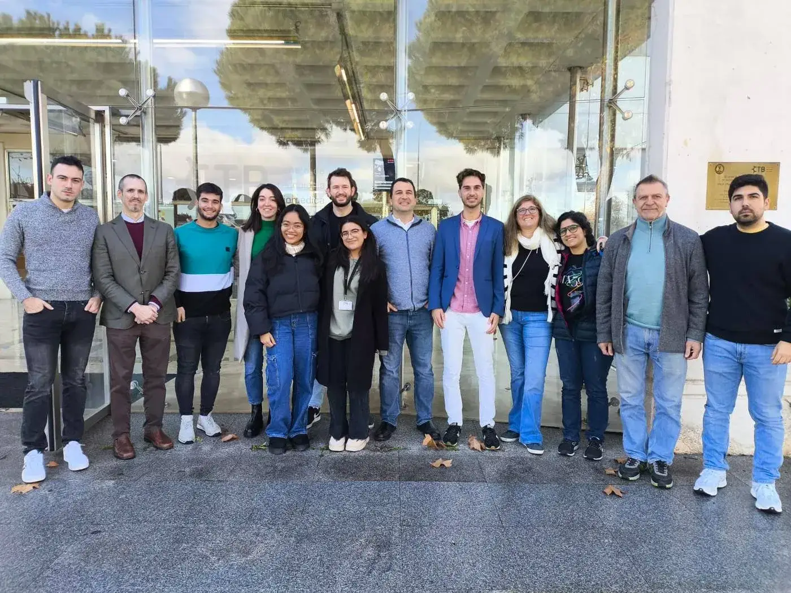
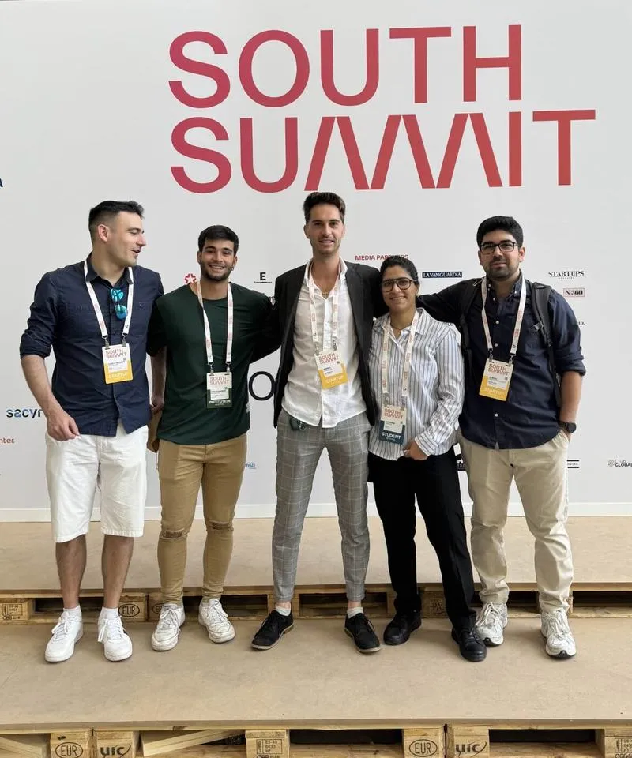

Asistentes, agentes y análisis de datos que funcionan en vuestra propia infraestructura. Para salud y entornos regulados: hemos trabajado con hospitales, centros de investigación y administraciones. Aplicamos tecnología desarrollada y utilizada en entornos de investigación, con experiencia en investigación aplicada y tecnología biomédica.
Usar IA con datos clínicos, sin que salgan del edificio
Si vuestros datos no pueden enviarse a un servicio en la nube, vuestro equipo se queda sin acceso a la IA. Lo resolvimos con IA local: un sistema que desplegamos para nuestro propio equipo y utilizamos a diario, con datos que permanecen dentro del edificio.
Y venimos de la investigación clínica: ≈80% de adherencia al plan de monitorización en nuestras soluciones para personas mayores, medida en estudios con pacientes. Ver el caso
Privacidad y normativa
Diseñamos las soluciones de inteligencia artificial (IA) para que vuestros datos no salgan de vuestra organización y para facilitar el trabajo de vuestro equipo de protección de datos. No somos una asesoría jurídica ni emitimos certificaciones: os ayudamos a entender qué marcos os afectan (Reglamento General de Protección de Datos [RGPD], Reglamento de Inteligencia Artificial de la UE [AI Act], Esquema Nacional de Seguridad [ENS] y, si hay finalidad médica, el reglamento de productos sanitarios) y os facilitamos la información técnica que vuestro delegado de protección de datos (DPO) o asesoría legal necesitará. Guía: IA privada en hospitales.
Acceso y trazabilidad
Registro de cada petición y de su uso por equipo, tráfico cifrado, red segmentada y monitorización activa.
Vuestros datos, solo vuestros
Los modelos corren en vuestro propio hardware, dentro de la Unión Europea. Nunca alojamos nada en nuestros servidores.
Normativa en el día a día
Empezamos con una auditoría de usos y una hoja de ruta, y revisamos la normativa durante el mantenimiento.
La responsabilidad regulatoria de un sistema recae en la organización que lo despliega. Información orientativa, actualizada en octubre de 2026.
Un camino claro, de la idea a la operación
Avanzáis paso a paso y solo seguís si tiene sentido para vuestro negocio.
1
Diagnóstico
Analizamos vuestros datos, casos de uso y requisitos de privacidad, y valoramos si la IA local tiene sentido y qué infraestructura necesita.
2
Proyecto piloto
Probamos la solución con vuestros casos en nuestro servidor de pruebas, sin compromiso todavía.
3
Acompañamiento
Mantenemos, mejoramos y ampliamos lo que funciona.
Integración de sistemas de salud con el estándar de intercambio de datos de salud Fast Healthcare Interoperability Resources (FHIR), plataformas para el seguimiento de la fragilidad e interfaces pensadas para personas mayores, con la adherencia como objetivo.
Plataformas para servicios públicos de prevención, apoyadas en evidencia científica, y software para proyectos de investigación, incluido un proyecto europeo.
Empresas e instituciones con las que hemos trabajado
Compañías tecnológicas, de ingeniería y biomédicas.
Los logotipos identifican a clientes y colaboradores de proyectos y pertenecen a sus titulares; su presencia no implica que nuestros servicios comerciales estén respaldados o garantizados por esas instituciones.
AgeingLab Tech es una iniciativa de desarrollo y aplicación tecnológica: aplicamos tecnología que utilizamos y desarrollamos en el contexto de AgeingLab para resolver problemas reales de empresas y organizaciones.
AgeingLab es un laboratorio de investigación situado en el Centro de Tecnología Biomédica (CTB) de la Universidad Politécnica de Madrid (UPM). Nuestra diferenciación consiste en trasladar esa experiencia en investigación aplicada y tecnología biomédica a soluciones prácticas: inteligencia artificial, software e integración tecnológica que funcionan en vuestra propia infraestructura.
Los servicios que contratáis en esta web los presta AgeingLab Tech como iniciativa tecnológica independiente; no son actividad institucional de la UPM ni están garantizados oficialmente por la universidad.

El equipo en el Centro de Tecnología Biomédica, Madrid

En South Summit
Origen investigador
Venimos de la investigación aplicada y trabajamos con rigor científico.
Vuestros datos, bajo vuestro control
Diseñamos las soluciones para que la información sensible no salga de vuestra organización.
Trato directo
Un equipo reducido que os atiende directamente, sin intermediarios.
Equipo
Las personas que construyen vuestro proyecto
Investigación, IA, software e internet de las cosas (IoT) en un mismo equipo. Habláis directamente con quienes diseñan y programan vuestra solución.